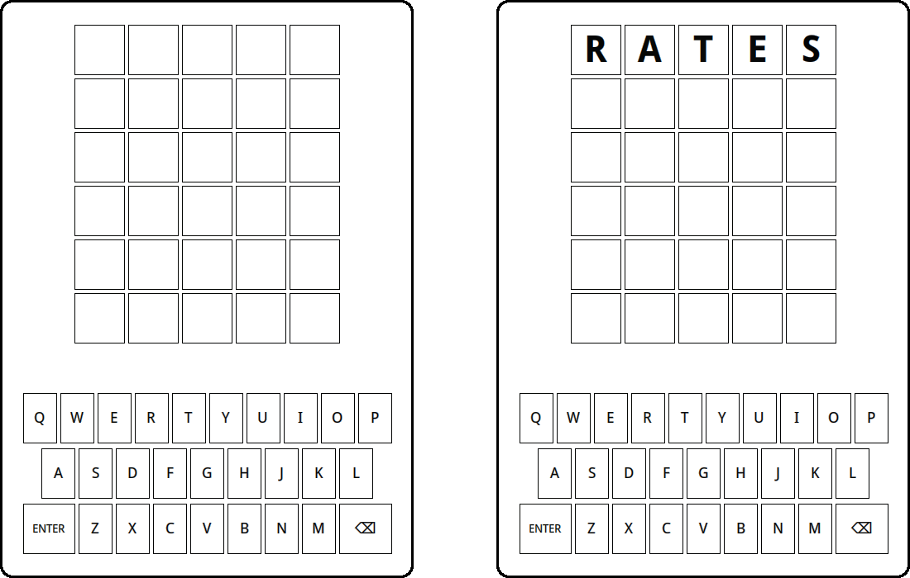

Introduction to Wordle
The Starting Template
The good news is that you don’t have to implement the Wordle project entirely from scratch. The starting repository already includes the following files:
| File name | Description |
|---|---|
Wordle.py |
The starter file for the project, which uses the WordleGraphics module to display the board. |
WordleGraphics.py |
This module exports the WordleGWindow object type, which is responsible for managing the graphics, along with several useful constants. |
english.py |
This module exports the constant ENGLISH_WORDS, and a function is_english_word(s) that checks whether s is a valid English word. It is important to note that all the ENGLISH_WORDS are lowercase! |
Unless you are implementing extensions, the only file you will need to change is Wordle.py, which imports the resources it needs from the other modules already. The starting version of Wordle.py is included in the starting resources, but is included here in Figure 1 for reference.
########################################
# Name:
# Collaborators (if any):
# Estimated time spent (hr):
# Description of any added extensions:
########################################
from WordleGraphics import WordleGWindow, N_ROWS, N_COLS
from english import ENGLISH_WORDS, is_english_word
from WordleGraphics import CORRECT_COLOR, PRESENT_COLOR, MISSING_COLOR, UNKNOWN_COLOR
import random
def wordle():
""" The main function to play the Wordle game. """
def enter_action():
""" What should happen when the RETURN or ENTER key is pressed. """
gw.show_message("You need to implement this method")
gw = WordleGWindow()
gw.add_enter_listener(enter_action)
# Startup boilerplate
if __name__ == "__main__":
wordle()Wordle.py. Of particular importance is line 21, where an instance of the WordleGWindow data type is stored in the variable gw. This is the variable you will use throughout the rest of the program when wanting to interact with the WordleGWindow.
When you download the initial repository, a lot of the code is already in and ready to go because we have implemented the graphics for you. Running Wordle.py creates a window, draws the letter boxes, and creates the keyboard at the bottom of the window. You can even type letters either by hitting keys on the keyboard or clicking the key on the screen, just as you can when you are playing the online version. Figure 2 shows both the initial screen and the screen you get after typing in the five letters of the useful starting word RATES, which includes five of the most common letters.

RATES (right).
Unfortunately, that is all the program does at the moment. It doesn’t actually let you play the Wordle game. That’s your job! But first, it is worth spending a bit of time reviewing the rules of Wordle, in case you’ve somehow managed to miss the craze.
Playing Wordle
The object of the Wordle puzzle is to figure out the hidden word for the day using no more than six guesses. When you type in a word and then hit the RETURN or ENTER key, the game gives you information about how close your guess is by coloring the background of the letters. For every letter in your guess that is in its correct position, Wordle colors the background of that letter a light shade of green, as indicated in your program by the constant CORRECT_COLOR. For every letter that appears in the word but is not in the correct position, Wordle colors the background a brownish yellow (PRESENT_COLOR in your program). All the letters in the guess that don’t appear in the word are colored a medium gray (MISSING_COLOR in your code).
For example, suppose that the hidden word for the day was RELIC, and your first guess was RATES, as in the Figure 2 image. The R is in the correct position, and the word contains an E, but not in the position guessed. The hidden word does not contain the letters T, A, and S. Wordle reports that information by changing the background color of the squares like this:
Even though you know the position of the R, it doesn’t make sense to guess more words beginning with R at this point because doing so gives you no new information (assuming you are not playing in hard mode, where you are required to do so). Suppose that you tried guessing the word LINGO, which contains five new letters, two of which appear in the word but none of which are correctly positioned. Wordle responds by coloring the letters in your second guess as follows:
Putting these clues together means that you know that the word begins with an R, contains the letters E, L, and I in some order other than the one you guessed, and that the letters A, T, S, N, G, and O do not appear anywhere in the word. These answers give you an enormous amount of information! If you think carefully about it, you might find the word RELIC, which is in fact the only English word that meets these conditions.
Done in three!
It is worth noting a few other rules and special cases. The hidden word and each of your guesses must be a real English word that is five letters long. The file english.py included in the repository is described in Chapter 3 of the text, and exports two resources here: the constant ENGISH_WORDS, which is a sequence of all valid English words in lowercase (of any length, not just the five-letter ones!), and a function is_english_word(s), which tests whether s is a valid English word. If you guess a word that is not in the word list, Wordle displays a message to that effect, at which point you can delete the letters you’ve entered and try again. Another rule is that you only get six guesses. If all the letters don’t match by then, Wordle gives up on you and tells you what the hidden word was.
The most interesting special cases arise when the hidden word and the guesses contain multiple copies of the same letter. Suppose, for example, that the hidden word is GLASS and you, for some reason, guess the word SASSY. Wordle responds with the following colors:
The green S shows that there is an S in the fourth position, and the yellow S shows that a second S appears somewhere else in the hidden word. The S in the middle of SASSY, however, remains gray because the hidden word does not contain three instances of the letter S.
The WordleGraphics Module
Even though you don’t need to make any changes to it or understand the details of its operation, you need to know what capabilities the WordleGraphics module has on offer so that you can use those facilities in your code. The most important thing to know is that this library module exports a data type called WordleGWindow, which implements all the graphical capabilities of the game. The methods exported by the WordleGWindow type are outlined below in Table 1. The right column gives a brief description of what these functions do, though more complete descriptions appear later in this guide in the description of the milestones that require them.
WordleGWindow object. I have included the dot before each function/method name as a reminder that you will call these methods on the WordleGWindow object using the receiver syntax we discussed in class. In the starting code in Figure 1, that object is named gw and is defined on line 21.
| Function | Description |
|---|---|
WordleGWindow() |
Creates and displays the graphics window |
.set_square_letter(row, col, letter) |
Sets the letter in the specified row and column |
.get_square_letter(row, col) |
Returns the letter in the specified row and column |
.add_enter_listener(func) |
Specifies the function to be run when the ENTER key is pressed |
.show_message(msg) |
Shows a message below the squares |
.set_square_color(row, col, color) |
Sets the color of the specified square |
.get_square_color(row, col) |
Returns the color of the specified square |
.set_current_row(row_idx) |
Sets the row index in which typed characters appear |
.get_current_row() |
Returns the current row index |
.set_key_color(letter, color) |
Sets the color of the specified key letter |
.get_key_color(letter) |
Returns the color of the specified key letter |